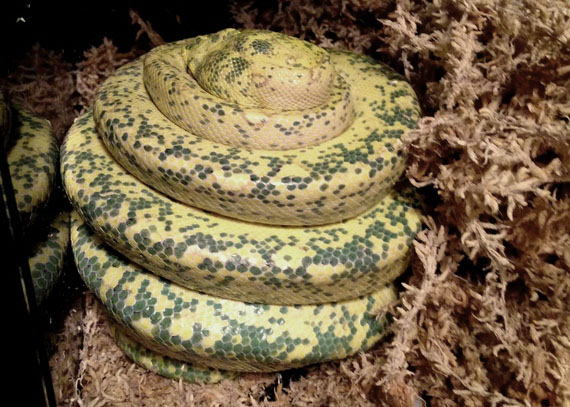
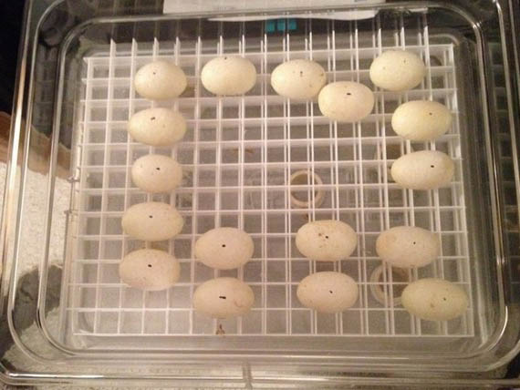
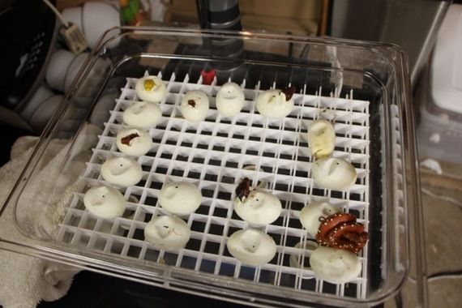

<div class="row">
    <div class="col-md-12">
		<h2>My Chondro Story</h2>
		<h4>How I became a green tree python breeder</h4>
		<h5>(Originally posted on <a href="http://moreliaviridis.yuku.com/" target="_blank">MVF</a> on Febuary 4, 2014)</h5>
		<p>
			About 5 years ago I got my first chondro.  It was of unknown lineage, supposedly an Aru x Biak, but I didn't care or know about any of 
			that back then.  I just knew I <strong>could not stop</strong> looking at that snake!  Every night when I got home from work I would sit and stare at it -  
			the shiny green against the white speckled scales lining it's dorsal, the way it moved over the perches and through the plants in it's cage 
			at night, the distinctive and powerful appearance of it's head. <strong>I WAS HOOKED.</strong>  I know anyone reading this already knows the 
			feeling I'm talking about.   
		</p>
		<p>
			I was told I had bought a female, and it didn't take long for me to begin dreaming of breeding these beautiful creatures.  Through the  
			<a href="http://moreliaviridis.yuku.com/" target="_blank">Morelia Viridis Forums (MVF)</a> I found a local chondro keeper who had just 
			begun breeding - <a href="http://www.houseoftheserpent.com/" target="hots">Tad Duane</a>.  He answered all of my questions and helped 
			me get a newly acquired chondro feeding.  Over the past 4 years or so he has given me great advice, has helped me with stuck sheds, 
			sexes my animals when they reach proper size, and has become a good friend.  We tried a breeding loan with my female a few months after 
			meeting, and that's when I found out my female was a male (who hasn't had that experience??).     
		</p>
		<p>
			So I began acquiring more chondros - mostly neonates because I wanted to experience their color change, and I felt like I needed to 
			understand this species better before attempting to breed them.  I wanted to see the entire life cycle, and I wanted to build a collection 
			of high quality animals.  So I bought chondros from people like Jason Stevens, Rico Walder, Pete Erickson, Eddie Aste, Mike Lockwood and 
			Tad Duane.  Every one of those quality breeders has helped me in some way - that's how this community works.     
		</p>
		<p>
			Over the past couple years I've thinned out my collection of other species so I could focus on chondros.  I've learned to "read my snakes" - 
			something I heard a lot when I first got into chondros, but took me a while to understand completely.  I probably could have started a breeding 
			program last year, but wanted to give my oldest female - an incredible OS HY Eddie Aste creation named 
			<a href="/#/Detail/EA0910Vi">Lucille</a> - another year to mature and to give her a better shot at a long life.
		</p>
		<p>
			So this past October I paired <a ui-sref="Detail('MSBB0910')">Dupree</a> - a beautiful male from the Mandango Calico x Buschemi 
			Kelme pairing - up with Lucille.  I was thrilled when I witnessed copulation immediately, and regularly over the next 6 weeks. After that I removed 
			Dupree, got him feeding again, and began waiting for what I hoped would be a very obvious ovulation.  I waited, and waited, but it never seemed 
			to materialize.
		</p>
		<p>
			A few weeks ago she shed, and I thought, "If she's shedding but hasn't ovulated yet, that must mean it's just not gonna happen this year."  
			Then, about a week ago she started getting very restless, after being sedentary for a couple months.  One night she managed to get all of the 
			water out of her water bowl and bunch up the puppy-pad that I use for substrate into a big clump on the bottom of her enclosure.  That made 
			me think - "NESTING!".  I emailed Tad to let him know, saying I was still very skeptical since I hadn't witnessed any ovulation, but Tad 
			said, "Remove her perches, remove her water, and get a lay box in there, she's gravid!"  So I got out the lay box I had bought a couple years 
			ago on MVF, hoping for a moment like this.  She started going in it immediately.  That was last Wednesday.   
		</p>
		<p>
			Yesterday (Sunday) morning I went into the snake room to check on her, and found this:
			
			
			
			She was laying eggs!  And they were a LOT bigger than I expected them to be!  I contacted Tad, who I now refer to as the "chondro whisperer", 
			and he agreed to come by last night to help me get them setup.  I had bought an old wine cooler on CraigsList last year, and Tad came by one 
			Saturday and basically built the whole incubator for me.  Following threads on MVF, and Tad's instructions, I had set it up last week with 
			egg boxes, and cruising at 87 degrees with an old Helix thermostat.  So last night I got home to find Lucille tightly wrapped on a clutch of 
			an unknown number of eggs:
			
			
			
			Tad came by, and we strategized about how to get the eggs from the lay box to the incubator.  He also checked my thermostat and we found it 
			to be off by a few degrees, so we swapped out the Herpstat 4 I was using on some cages for the Helix, and set it to a perfect 87.4.  Again, 
			where would I be without this guy's help??  We then took the lay box out of the enclosure and began uncoiling Lucille from the clutch:  
			
			
			
			There were eggs everywhere - she couldn't contain them all within her coils.  Here they are laid out in the egg box:  
			
			
		</p>
		<p>
			17 plump, healthy (from first appearance) eggs, no slugs!  We candled a couple and they had veins, but we didn't candle them all. 
			Needless to say, I'm freakin' GIDDY at the potential of this pairing, and getting a nice sized clutch is icing on the cake if it 
			all works out.
		</p>
		<p>
			Today I'm just a VERY grateful guy with a box of eggs.  Hopefully in a couple months I'll be a breeder. I'm sure there will be setbacks 
			ahead, that's life. But the dream of actually producing these amazing animals is so close now I can taste it...  I owe a truckload of 
			thanks to MVF and all of the members who have helped me in the past, especially Tad Duane.
		</p>
		<p>
			It's been one hell of a ride, with a lot of highs, and a few lows.  In many ways, it's only just beginning. 
		</p>
		<p>
			... I updated this a couple months later with this:
			
			
		</p>
	</div>
</div>